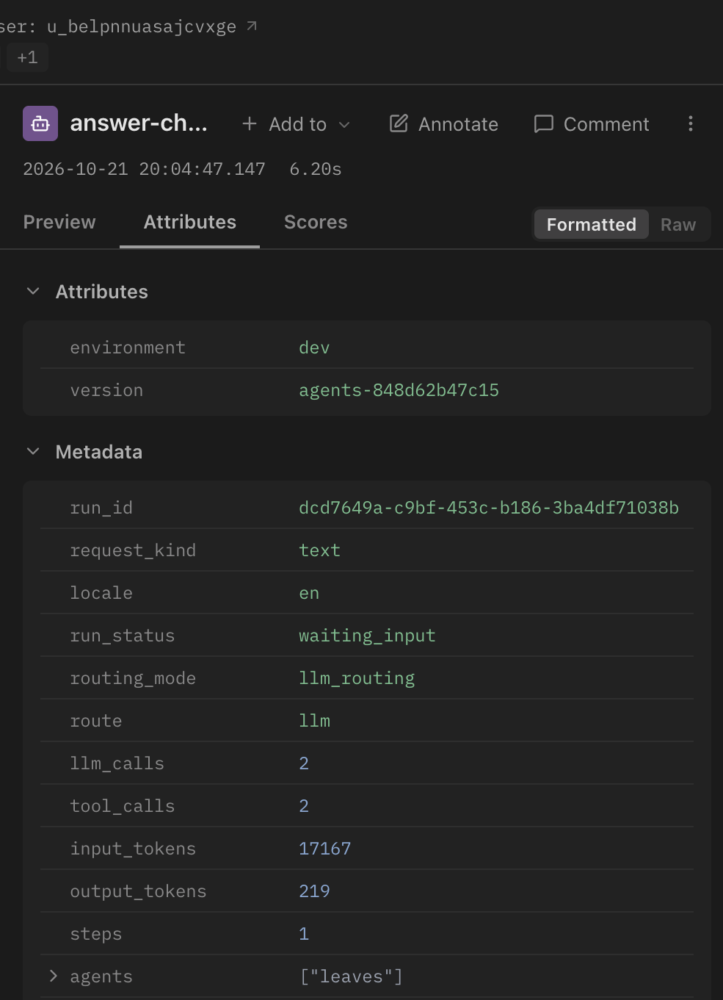

The detail pane for an observation is where you debug what the model actually saw, subject to your capture mode and masking.

Fields I check every time
- Input and output: structured JSON for planner and compose calls. Check them against your Pydantic schema expectations. Was the right tool in the list? Did the output choose it?
- Token breakdown: input, output and, where the provider reports it, cached tokens. Rising input tokens usually mean the capability cards or the transcript window grew.
- Cost: per-observation cost when model prices are configured. Planner plus resolver plus compose should fit your per-turn budget.
- Metadata: model id, purpose (
plan,compose,route) and, on tool spans, the capability id. - Scores: automated checks attached to the trace when the turn finished (latency, call count, cost ceiling). Failed checks are easy to spot.
Debugging a wrong tool choice
- Open the planner generation for the turn.
- In the input, find the capability list. Is the correct tool present? If not, the problem is catalog filtering, not the model.
- If it is present, read its description next to the tool that was chosen. Overlapping descriptions cause most wrong choices.
- Read the output's
intentfield. It often shows how the model interpreted the request. - Fix the description or policy, rerun the golden case, and compare the new generation side by side.
Reading cached tokens
If your provider supports prompt caching, a well-structured prompt shows a large share of cached input tokens on second and later calls. If cached tokens drop to zero after a change, something variable (a timestamp, a request id, a shuffled tool order) has moved into the prompt prefix and broken caching.
Capture modes: development versus compliance
structure is the safest default: shapes and counts. masked shows text with personal entities replaced by pseudonyms, which is useful for debugging phrasing. Raw content in production should require explicit approval from whoever owns data protection, and any personal data that survives masking should raise an alert (see masking and failures).
Terms on this page
- Cache-read tokens
- Tokens served from provider prompt cache, usually cheaper.
- Turn score
- Numeric flag Langfuse stores on a trace after automated checks.